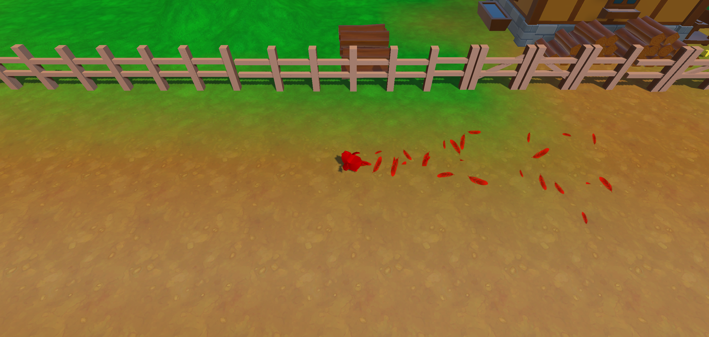
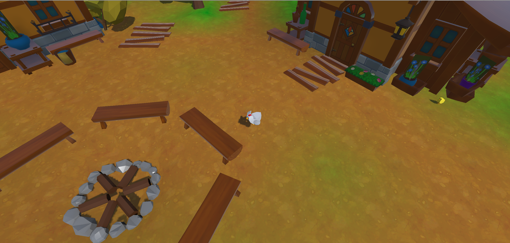
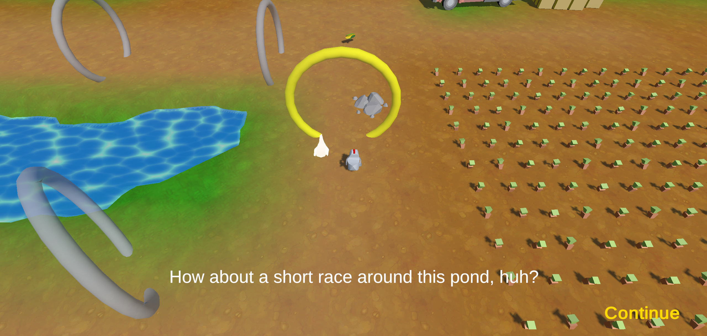
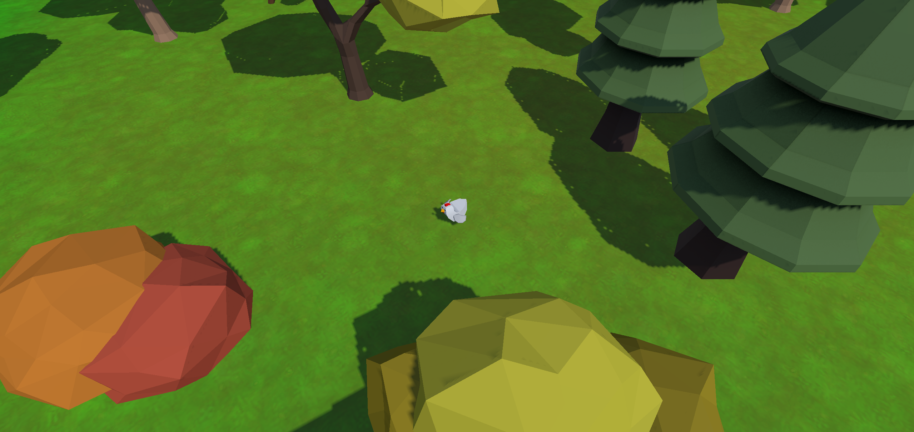
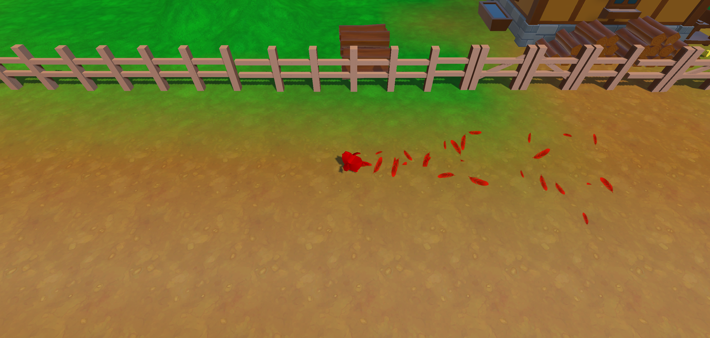
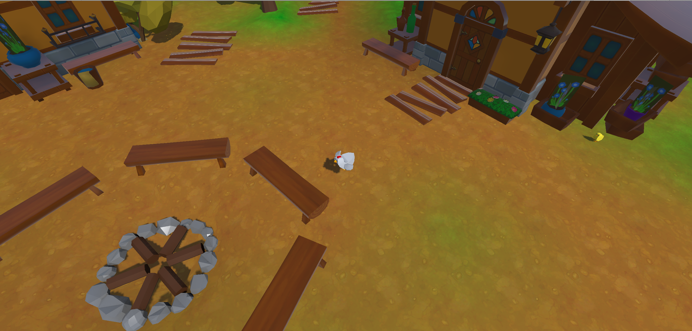
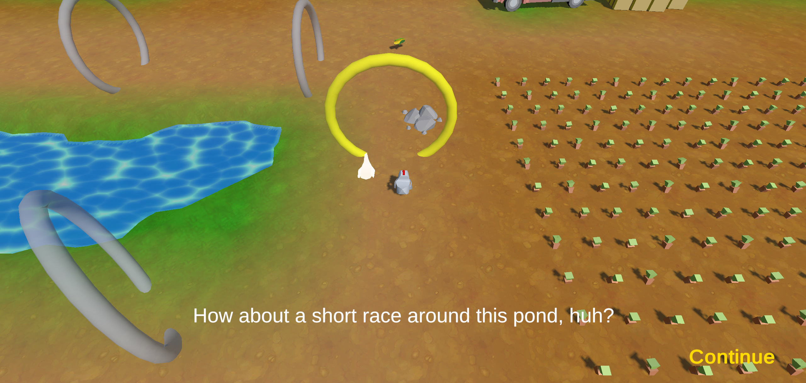
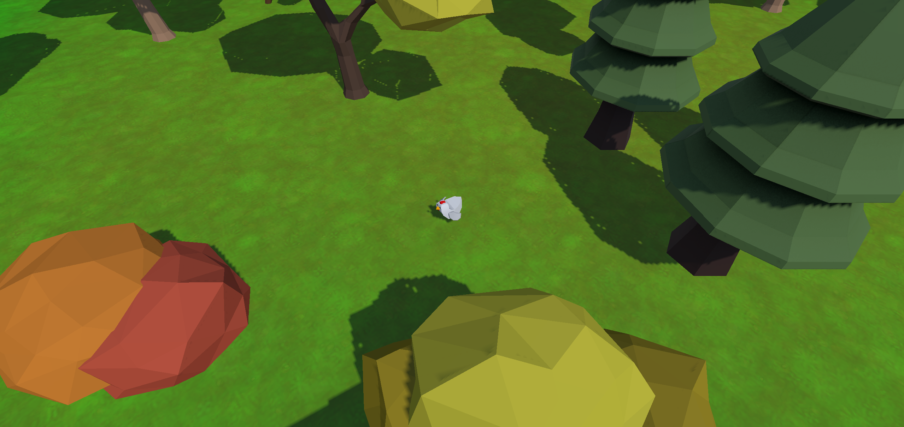

Find out more about my qualifications by downloading my resume below!
My name is Gal Afik and I am a software developer, game developer, website designer, hardware tinkerer, and graphic artist. If you have a need for any of those things, then you've made it to the right place! If there's anything I've learned about myself, it's that I LOVE to learn new skills. Skiiing, instruments, languages (both coding and world), and many others! I love to sit down with a manual or instruction booklet and figure things out. If there's problem I can't solve, I will make it my mission to learn it inside and out until it's my bread and butter! Don't believe me? Just click below to check out my various experiences and qualifications.
Resume


 






